This page demonstrates the usage of a sub-group of aesthetics; colour, fill and alpha.
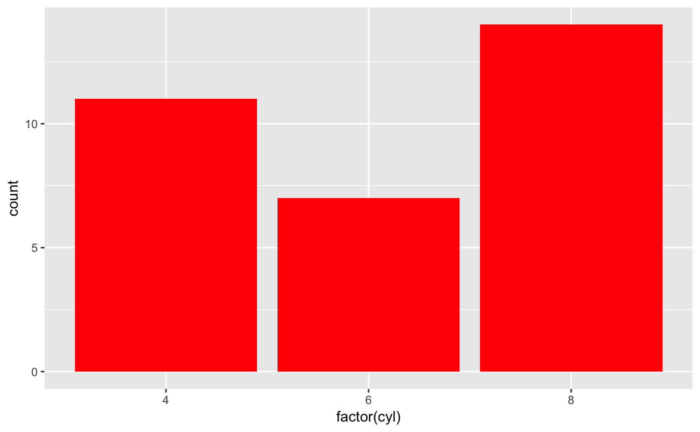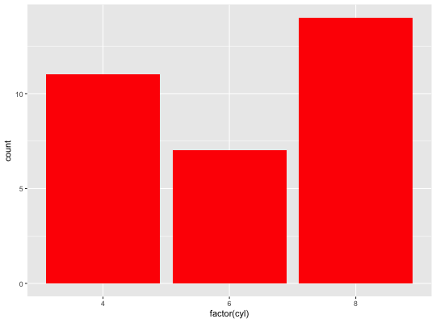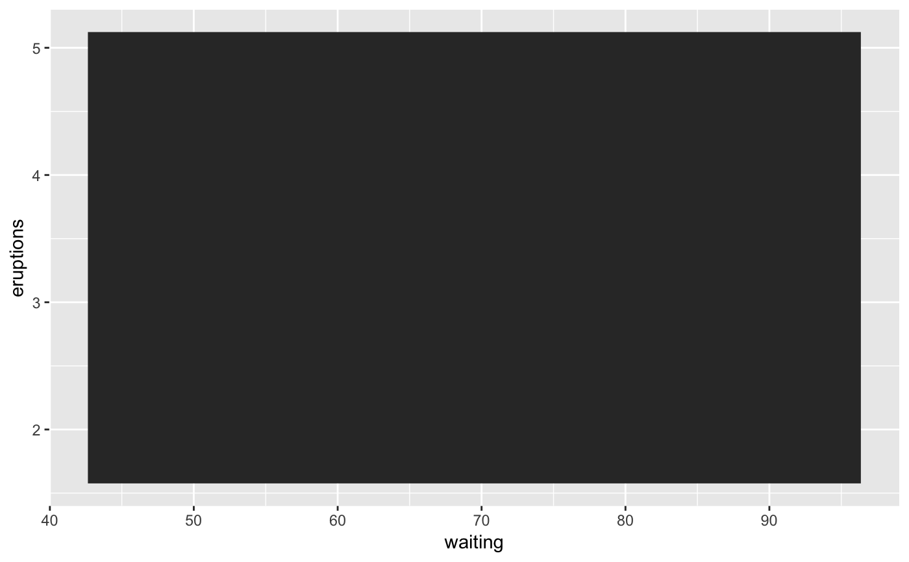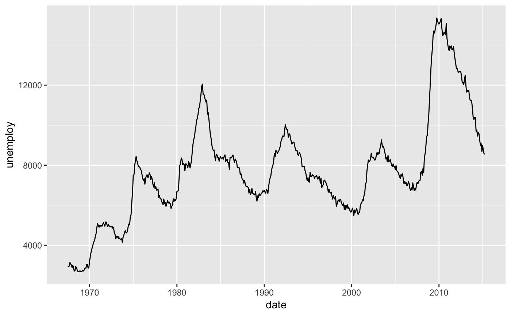# The aesthetic fill also takes different colouring scales # setting fill equal to a factor variable uses a discrete colour scale k <- ggplot(mtcars, aes(factor(cyl), fill = factor(vs))) k + geom_bar()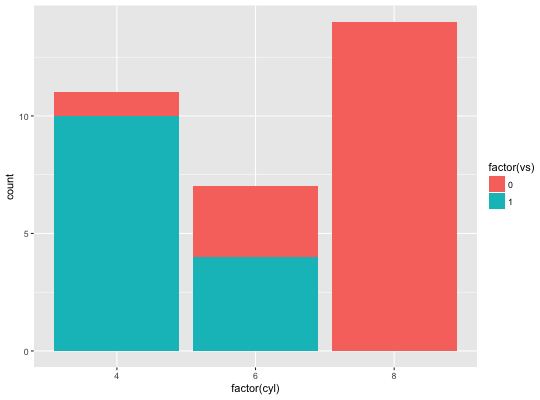# Fill aesthetic can also be used with a continuous variable m <- ggplot(faithfuld, aes(waiting, eruptions)) m + geom_raster()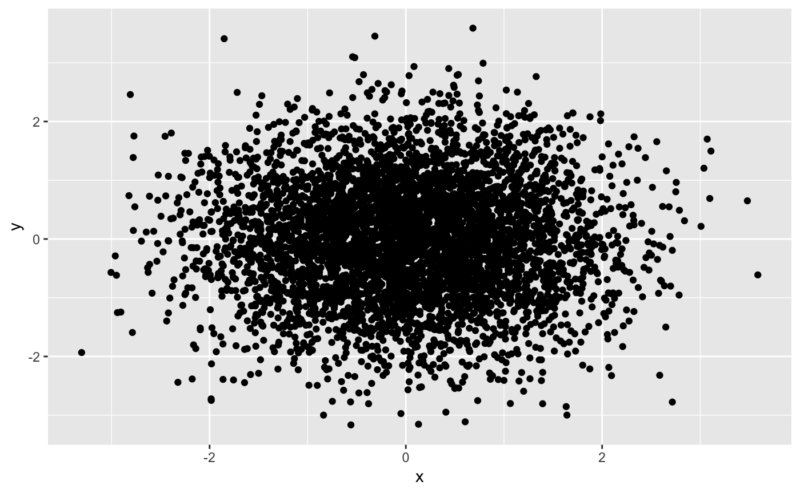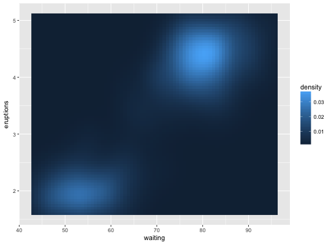# Some geoms don't use both aesthetics (i.e. geom_point or geom_line) b <- ggplot(economics, aes(x = date, y = unemploy)) b + geom_line()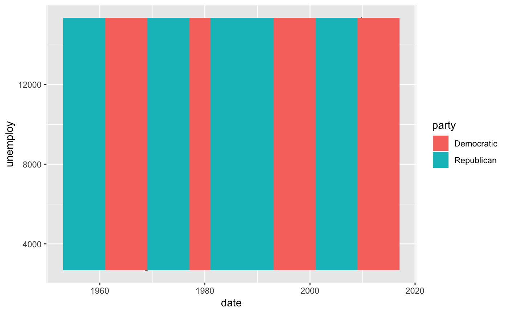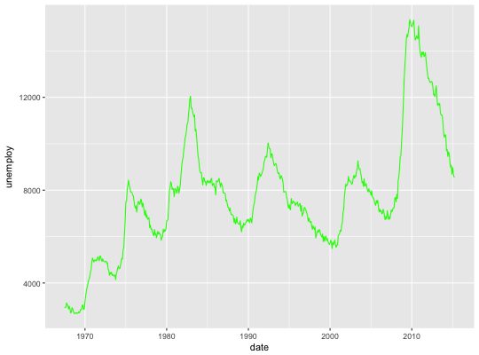b + geom_point()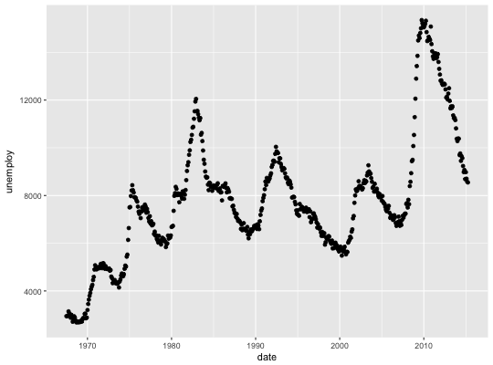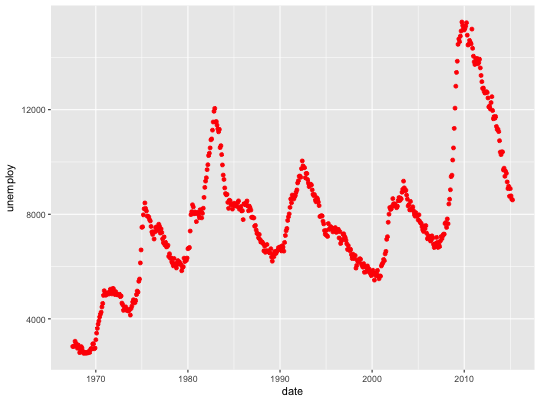# For large datasets with overplotting the alpha # aesthetic will make the points more transparent df <- data.frame(x = rnorm(5000), y = rnorm(5000)) h <- ggplot(df, aes(x,y)) h + geom_point()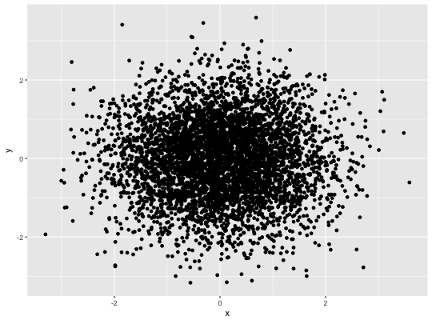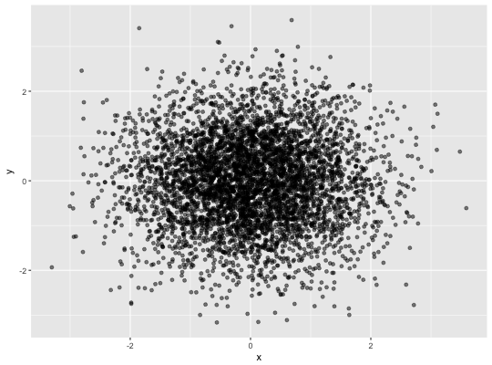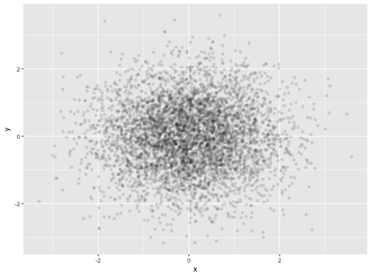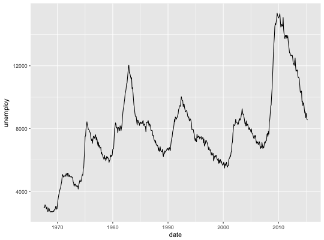yrng <- range(economics$unemploy) j <- j + geom_rect(aes(NULL, NULL, xmin = start, xmax = end, fill = party), ymin = yrng[1], ymax = yrng[2], data = presidential) j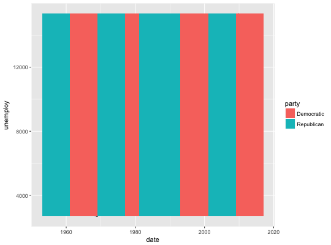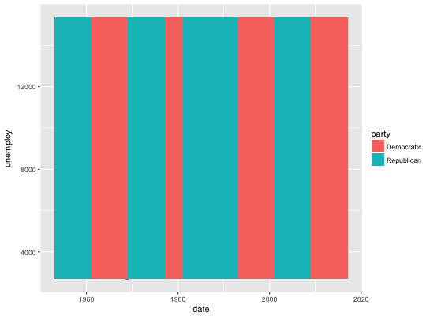